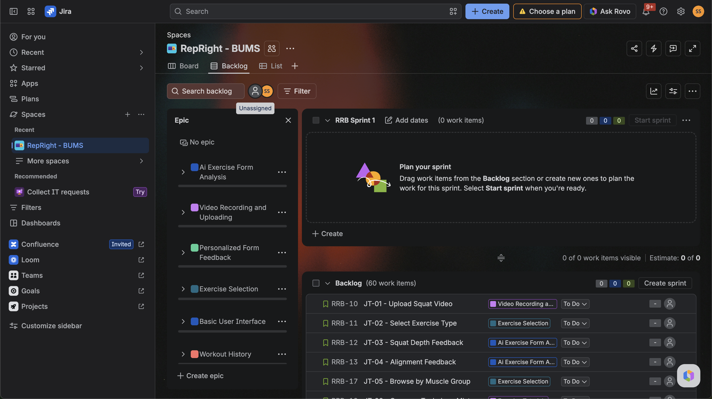
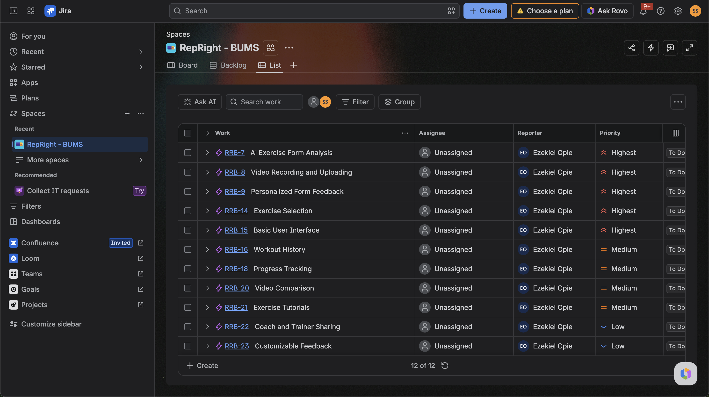
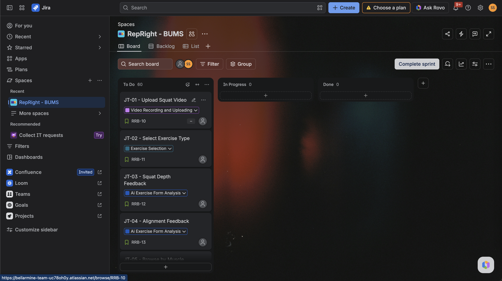
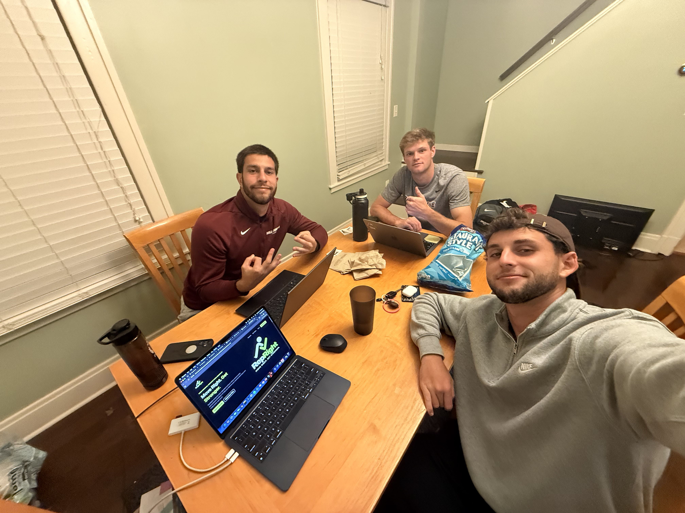

Software Engineering Assignment 2
Prioritized Feature List
RepRight's proposed features are ordered from highest to lowest priority based on the product concept, personas, scenarios, and user stories.
Minimum Viable Product
Features marked with the MVP label represent the core functionality needed for RepRight's first usable version. Additional features can be introduced after the main analysis workflow is working reliably.
PRIORITY 1
AI Exercise Form Analysis
Description
RepRight analyzes recorded exercise movements and identifies possible technique issues visible in the video.
Related User Stories
As a beginner weightlifter, I want to have my squat video analyzed so that I can recognize possible technique mistakes before repeating them.
As an experienced weightlifter, I want to receive movement-specific analysis so that I can identify subtle changes in my lifting technique.
Constraints
Analysis requires a clear view of the movement, adequate lighting, and an exercise supported by the initial model. Results should not claim to diagnose or prevent injuries.
Comments
This is RepRight's core product value. The first version should support a small exercise library and expand after feedback quality becomes dependable.
PRIORITY 2
Video Recording and Uploading
Description
Users can provide RepRight with an exercise recording by recording a new video or uploading an existing one.
Related User Stories
As a gym user, I want to record or upload an exercise video so that I can get feedback without needing another person to watch me.
As a personal trainer, I want to submit a client exercise recording so that I can review technique remotely.
Constraints
RepRight should accept common phone video formats, use reasonable duration and file-size limits, and request permission before accessing the camera or files.
Comments
Users need a simple and reliable way to provide video footage before any analysis can take place.
PRIORITY 3
Personalized Form Feedback
Description
After analysis, RepRight provides understandable feedback based on the movement visible in the user's exercise recording.
Related User Stories
As a beginner weightlifter, I want to see simple corrections after my analysis so that I can understand how to improve on my next set.
As a college athlete, I want to receive clear feedback about my exercise technique so that I can make useful training adjustments.
Constraints
Feedback should be understandable, based on observable video evidence, and presented as general fitness guidance rather than medical advice.
Comments
RepRight should show the most important issue first and provide a small number of actionable suggestions instead of overwhelming the user.
PRIORITY 4
Exercise Selection
Description
Users identify the exercise performed so that RepRight can apply the appropriate analysis.
Related User Stories
As a gym user, I want to choose the exercise I performed so that I can receive feedback relevant to that movement.
As a beginner weightlifter, I want to find the squat exercise easily so that I can analyze my first workout without confusion.
Constraints
The first version can support a limited selection of common strength exercises. Unsupported movements must be clearly identified.
Comments
A simple exercise search or short categorized list is sufficient for the first version.
PRIORITY 5
Basic User Interface
Description
RepRight provides a simple interface that allows users to move through the main analysis workflow without unnecessary complexity.
Related User Stories
As a new user, I want to find the upload and analysis functions quickly so that I can use RepRight without prior instruction.
As a returning user, I want to understand what to do next on each screen so that I can complete a form check with minimal effort.
Constraints
The interface should work on typical phone screens, use readable labels, and clearly show upload, processing, and error states.
Comments
The core workflow is: choose exercise → upload or record video → review feedback.
PRIORITY 6
Workout History
Description
Users can save previous analyses and return to earlier workout sessions.
Related User Stories
As a regular gym user, I want to save past analyses so that I can review an earlier workout.
As a college athlete, I want to see previous recorded sessions so that I can refer back to earlier technique notes.
Constraints
History requires storage, privacy controls, and a way to identify individual sessions.
Comments
This feature is useful after launch, but basic exercise feedback can function without saved history.
PRIORITY 7
Progress Tracking
Description
Users can review changes in technique across multiple workout sessions.
Related User Stories
As a beginner weightlifter, I want to see changes in my technique over time so that I can tell whether I am improving.
As a college athlete, I want to follow technique consistency across workouts so that I can spot patterns in my training.
Constraints
Progress measures should compare similar exercises and analysis criteria and should not present uncertain scores as exact measures of improvement.
Comments
A timeline of repeated analyses may initially be more useful than a complex numerical score.
PRIORITY 8
Video Comparison
Description
Users can compare two recordings of the same exercise to identify visible differences.
Related User Stories
As an experienced weightlifter, I want to compare two deadlift videos so that I can see differences between attempts.
As a beginner weightlifter, I want to view my old and new squat recordings together so that I can notice what I changed.
Constraints
Comparisons should use the same exercise and make differences in camera angle or video quality clear.
Comments
Side-by-side playback and simple annotations can be considered in a later release.
PRIORITY 9
Exercise Tutorials
Description
RepRight provides basic instructions and demonstrations for supported exercises.
Related User Stories
As a beginner weightlifter, I want to look up basic exercise instructions so that I can learn how a movement should be performed.
As a casual gym user, I want to review a short demonstration so that I can feel more confident trying an unfamiliar exercise.
Constraints
Tutorials should be reviewed for accuracy and clearly separated from personalized AI analysis.
Comments
Begin with concise instructions for exercises supported by the analysis system.
PRIORITY 10
Coach and Trainer Sharing
Description
Users can share selected workout analyses with a coach or trainer.
Related User Stories
As a college athlete, I want to share an analysis with my coach so that I can discuss technique during training.
As a personal trainer, I want to receive a client video and feedback report so that I can make coaching suggestions between sessions.
Constraints
Sharing must require user permission, provide clear access controls, and allow shared access to be removed.
Comments
A private link or simple export can be considered before developing complete in-app messaging.
PRIORITY 11
Customizable Feedback
Description
Users can adjust the amount and complexity of the feedback presented by RepRight.
Related User Stories
As an experienced weightlifter, I want to choose a more detailed explanation so that I can focus on the technical information I need.
As a beginner weightlifter, I want to keep feedback short and simple so that I can avoid confusing terminology.
Constraints
Customization must not hide important qualifications about uncertain analysis results.
Comments
Possible modes include beginner-friendly and detailed feedback. This feature is not essential for the MVP.
PRIORITY 12
Client Management for Trainers
Description
Trainers can organize and review exercise information for multiple clients separately.
Related User Stories
As a personal trainer, I want to organize several clients in one place so that I can review their recordings efficiently.
As a personal trainer, I want to track each client separately so that I can avoid mixing up workout notes.
Constraints
Client data requires secure account permissions and appropriate privacy handling.
Comments
This is an advanced trainer workflow and should be developed after the individual-user experience is working well.
Design Process
Feature Definition Process
Evidence of the team's process for grouping user stories, prioritizing features, and organizing the RepRight development workflow.

Figure 1. Grouping related user stories into proposed RepRight features in Jira.

Figure 2. Reviewing and prioritizing RepRight features, including the highest-priority MVP features.

Figure 3. Organizing the resulting user stories on the Jira board for the planned development workflow.

Figure 4. The RepRight team working together to review user stories, organize features, and discuss product priorities.